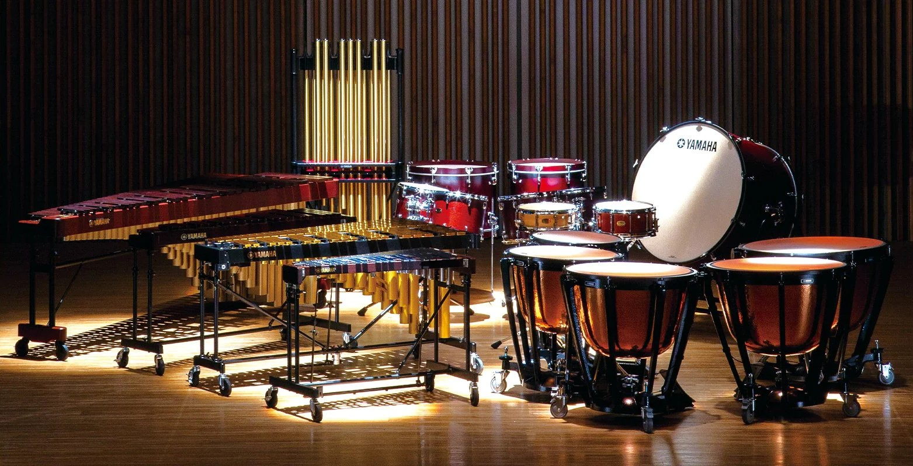

My Hobby
Coupled with my fascination for technology and coding I have a profound interest in home infrastructure design and smart home solutions. The prospect of crafting innovative and efficient living spaces that seamlessly blend with modern tech is an area that continually captivates my imagination.
Beyond the world of IT that occupies the center of my professional journey and future aspirations, my life is colored by a wide array of diverse interests. From music and martial arts to swimming and a love for motorcycles, I find joy and balance in the tapestry of my passions. These varied pursuits bring depth and richness to my life, reminding me of the countless ways to find inspiration and excitement beyond the realm of technology.
Home infrastructure design & smart home solutions
I am profoundly passionate about the art of designing smart solutions for homes and optimizing their infrastructure. This passion is rooted in my fascination with the incredible ways modern technologies can revolutionize our daily lives, making them not only more convenient and efficient but also significantly more sustainable.
As I explore the intricate world of smart home solutions, I'm constantly amazed by the possibilities they offer for home automation and control. These solutions encompass a wide array of aspects, ranging from lighting and security to energy management, all powered by innovative technologies. This is not just a passing interest; it's a field I immerse myself in wholeheartedly, recognizing its immense potential to create homes that are not only smarter but also more environmentally friendly.
In my quest for designing intelligent home systems, I prioritize the development of solutions that are not just functional but also remarkably energy-efficient. This commitment stems from my deep-rooted belief in the importance of sustainability. By meticulously crafting home infrastructures and automation systems, I aim to contribute to a future where our living spaces are not just comfortable but also profoundly eco-friendly.
My expertise extends to various facets of home infrastructure, encompassing everything from sophisticated automation systems to state-of-the-art security solutions. Whether it's crafting a robust security network to ensure the utmost safety or implementing energy-efficient solutions to reduce our carbon footprint, I'm committed to shaping the homes of the future. With my unique blend of technological acumen and the ability to tailor these innovations to individual needs,
I aspire to be at the forefront of the movement to make our homes smarter, safer, and more sustainable for generations to come.
Music: listening and playing
Music has been an unwavering and cherished companion throughout my life,enriching my journey with its melodic tapestry. Beyond the role of an avid listener, I have embraced the identity of an active musician. A crowning achievement in my musical odyssey is the completion of my second-degree music school education, specializing in percussion instruments. This comprehensive training delves into the intricacies of various percussion instruments, including drums, marimba, vibraphone, xylophone, and more. It has endowed me with a profound understanding of both the theoretical and practical dimensions of music.

Moreover, as an additional musical endeavor, I have had the privilege of playing the piano. This instrument serves as a soothing and reflective escape, allowing me to unwind, relax, and find solace amidst its harmonious notes. Whether it's the energetic rhythms of percussion instruments or the serene melodies of the piano, my connection to music remains profound, reflecting my commitment to creativity, expression, and relaxation.
My passion for music is a diverse voyage through various genres and styles, bridging the classical and contemporary realms. Music, in my view, is an art that possesses the remarkable ability to inspire, console, and unite people across diverse cultures and backgrounds. Consequently, I invest my time in music with an unwavering commitment.
Within my musical journey, I proudly achieved a musical high school diploma. This accomplishment is a testament not only to my dedication to music but also to my proficiency in using it as a vehicle for self-expression. Whether I'm lost in the rhythmic beats of the drum set, exploring the intricate tonalities of the marimba, unraveling the subtleties of the vibraphone, or crafting harmonious melodies on the xylophone, music is an integral part of my existence — a source of boundless joy and creative expression.
Sport: aikido, swimming
Sports have always played a profound role in shaping my character, instilling me with energy, discipline, and a constant drive for personal growth. Among the various athletic pursuits, Aikido stands out as a martial art that has left a deep and lasting impression on my life. It's not merely a means of combat but a profound philosophy centered around harmonious and graceful movements. In my relentless pursuit of mastery, I am currently preparing for my 3th kyu examination in Aikido — a testament to my unwavering dedication and ongoing commitment to this art form.
Aikido, often described as "the art of peace," teaches the practitioner to channel and redirect the opponent's force, emphasizing the avoidance of confrontation and violence. Through Aikido, I've not only developed my physical strength but also cultivated a profound sense of balance and mindfulness, which I carry into every facet of my life. This ancient discipline has shaped my character, instilling me with valuable lessons about the power of blending with life's challenges rather than clashing with them.
In addition to Aikido, I find solace and joy in the serene world of swimming. The tranquil embrace of the water and the rhythmic strokes create a meditative experience, allowing me to both unwind and maintain my physical fitness. The combination of Aikido's disciplined artistry and swimming's therapeutic rhythm provides me with a delicate equilibrium — a fusion of the powerful and the tranquil.
The profound philosophies of Aikido and the calming waters of swimming serve as constant reminders of the values I strive to integrate into both my personal and professional life: perseverance, technical precision, and unwavering focus. These principles guide me in navigating the complexities of challenges, both in and out of the dojo and swimming pool.
Motorcycles
Motorcycles have always held a unique allure for me, beckoning with the promise of thrilling adventures and the mesmerizing intricacies of their mechanical craftsmanship. The unbridled sense of freedom that accompanies each journey down the open road is nothing short of awe-inspiring. My passion for motorcycles isn't just a fleeting interest; it's an enduring fascination that continues to evolve.

As I delved deeper into the world of motorcycles, I realized that my connection with these two-wheeled marvels was destined to become more than a mere hobby. I ventured into the realm of e-commerce, specializing in the intricate domain of motorcycle and automotive parts. This journey was not only a professional endeavor but also an opportunity to immerse myself in the vibrant world of motorcycle enthusiasts and riders.
To excel in this dynamic field, I had to amass an extensive technical knowledge base, delving into the intricate details of motorcycle construction, understanding various models, and discerning the subtleties that make each machine unique. My role extended far beyond selling parts; it was about becoming a trusted resource for fellow riders, assisting them in finding the perfect components to enhance their motorcycles and automobiles.
Through this unique combination of personal passion and professional engagement, my knowledge and appreciation for motorcycles have grown significantly. I've gained insights into the intricacies of their mechanics, the artistry behind their design, and the camaraderie shared by the vibrant community of riders. The world of motorcycles remains an integral and ever-expanding part of my life, one that continues to ignite my curiosity and drive me to explore its boundless horizons.